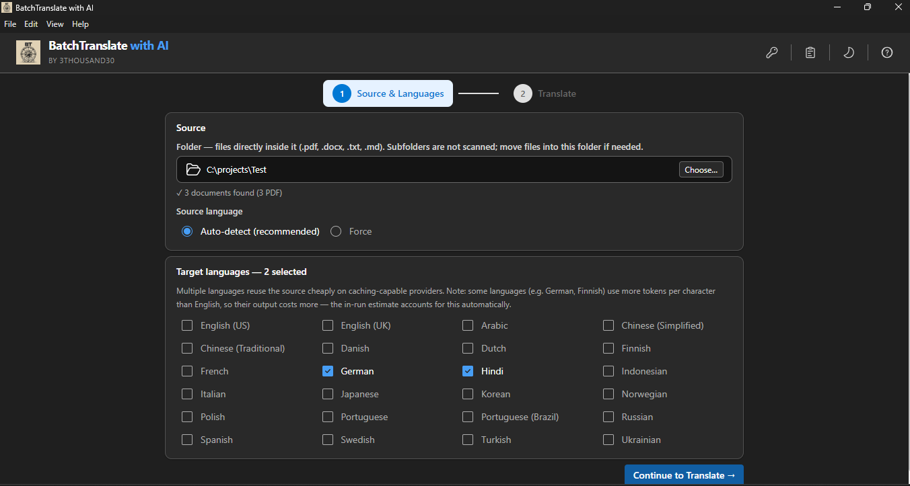
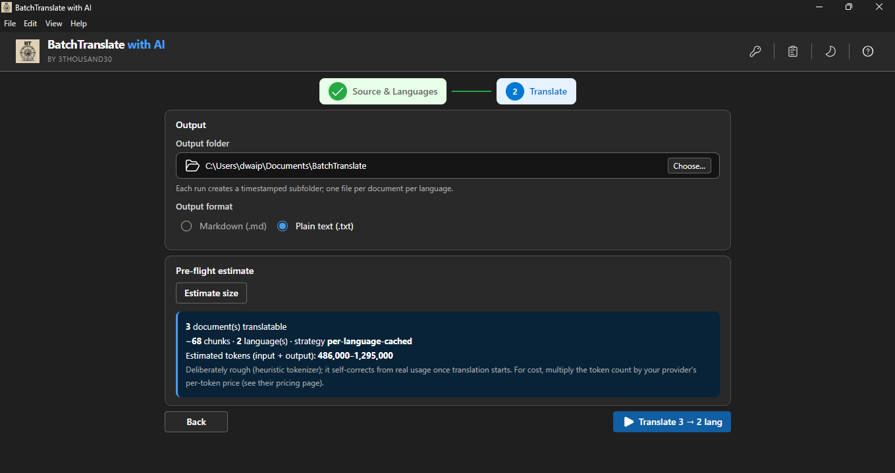
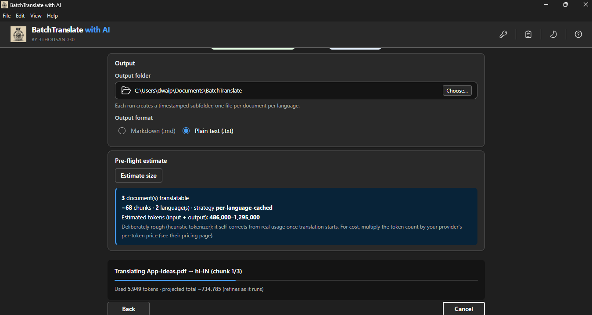
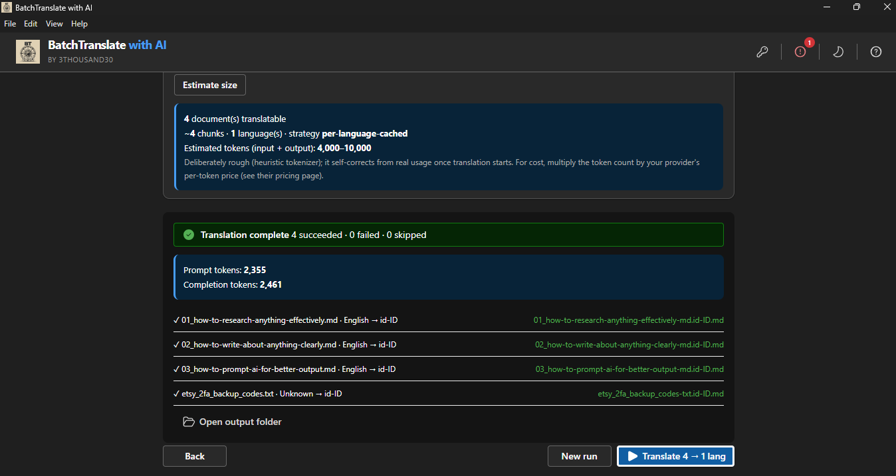

products / Batch Translate with AI
Batch Translate with AI
Batch-translate PDF, DOCX, TXT, and Markdown files with your own provider and local outputs.
* Microsoft Store prices vary by country/region; the amount shown is the US price.
Batch-translate folders of PDF, DOCX, TXT, and Markdown files into one or more languages in a single run. Bring your own AI key, choose the provider and model that fit your budget, and save every result to your PC as Markdown or plain text. API keys are encrypted locally with Windows DPAPI.
screenshots




what_it_does
who_its_for
Multilingual publishers and educators
Useful when one source set needs to become multiple language versions without paying for another SaaS translation layer.
Researchers and content operators
A fit for folders of PDFs, DOCX files, Markdown notes, and text files that need repeatable translation rather than one document at a time.
People who want cost control
Strong if you want to choose your own provider, translate into multiple target languages, and keep the outputs on your own PC.
best_paired_with
Batch Generate Text with any AI
Useful when the content is first drafted or structured in English and then translated into multiple target-language outputs.
BatchFile Organiser
Helpful once translated document sets start multiplying across languages, review folders, and delivery stages.
use_cases
Browse all use cases
Use the hub to see the current live workflows and the upcoming multilingual book and document-translation routes.
Mass-create social media content
A useful adjacent pattern when translated source material needs to become publishable posts, threads, and broader content packs.
privacy_and_control
This is a bring-your-own-key translation workflow. You choose the provider, model, and cost profile. API keys are encrypted locally using Windows DPAPI. The translated outputs are saved to your PC, not stored in a hidden 3thousand30 service.
Important distinction: local files stay local after translation, but the translation request is sent to the external AI provider you selected. That transparency is part of the product promise.
faq
Which file types can Batch Translate with AI handle?
It can batch-translate PDF, DOCX, TXT, and Markdown files stored in local folders.
Can it translate into more than one language in the same run?
Yes. It supports translating the same source set into one or more target languages in a single workflow.
Do the translated outputs stay local?
Yes. Outputs are saved to your PC. If you use an external AI provider, the prompt request goes to that provider, but the stored results remain local.
What happens with scanned or image-only PDFs?
Scanned or image-only PDFs are skipped with a clear reason instead of pretending usable translation text was extracted.
Who pays the AI provider?
You do. This is a bring-your-own-key model, so you choose the provider, control the cost, and pay them directly.
other_apps

Batch Generate Text
generative · windows
$18.74$24.99-25%

BatchGen Image
generative · windows
$13.99$19.99-30%

BatchEnhance Image
utility · windows
$4.99

BatchFile Organiser
utility · windows
$9.99

BatchWatermark Image
utility · windows
$4.99

BatchCompress Image
utility · windows
$2.99

BatchResize Image
utility · windows
$2.99